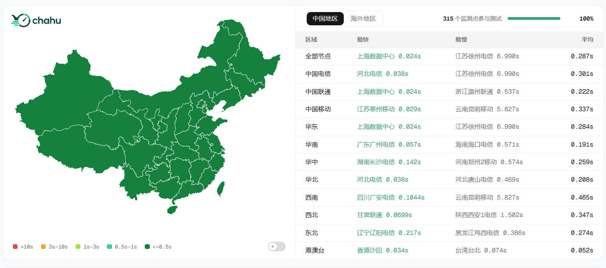

做网站的人大概都有过这样的经历：网站上线了，自己打开快得飞起，但用户群里隔三差五就有人喊“卡死了”“打不开”。问题出在哪？是你的服务器不行，还是某个地区的网络抽风，又或者是DNS解析出了岔子？这时候你就需要一个靠谱的网站测速工具，而茶壶测速（chahu.com），正成为越来越多国内站长、运维和开发者的首选。

一、测速工具那么多，为什么偏偏是茶壶？
市面上网站测速工具不少，但真正针对国内网络环境做过深度优化的并不多。茶壶测速最打动人的地方在于它的节点覆盖——横跨六大洲的骨干网络节点，212个探测节点遍布全球，覆盖32个国家。这是什么概念？就是说你测一次，相当于让两百多台分布在世界各地的电脑同时访问你的网站，几秒钟之内就能拿到一份全球可用性画像。
对于主要服务国内用户的网站来说，茶壶的国内节点密度尤其值得一说。Ping检测页面显示，它有162个监测点参与了测试。从北京电信到甘肃兰州电信，从上海联通到台湾台北移动，全国各省市、各运营商的节点基本都覆盖到了。这意味着你不仅能知道网站“能不能打开”，还能精确到某个城市、某个运营商的用户访问你网站到底快不快。
二、不只是测速，是一整套网络体检工具箱
很多测速工具功能单一，测个速就完了。茶壶不一样，它更像是一套网站网络健康的全面体检工具箱。
网站测速是核心功能，通过全国多节点发起HTTP测速，返回每个节点的响应时间、首包时间、完整加载时间等关键指标。你一眼就能看出哪个地区慢了、哪个运营商拖后腿了。
Ping检测则是另一个高频使用场景。162个节点同时发起ICMP探测，返回每个节点的延迟数据，还能按区域、按运营商分别统计。比如表格里显示，全部节点平均延迟21ms，电信平均21ms，联通22ms，移动21ms——这种粒度，对于排查区域性网络故障简直不要太方便。
DNS查询功能也相当实用。25个监测点同时发起DNS解析请求，能看到不同地区、不同DNS服务器对同一个域名的解析结果和耗时。如果你怀疑某个地区的用户打不开网站是因为DNS劫持或者解析慢，这个功能一测便知。
除此之外，茶壶还支持Traceroute路由追踪、TCPing端口检测、IPv6网络测试、网站可用性监控等一系列功能。可以说，从“能不能通”到“有多快”，从“哪里慢了”到“为什么慢”，茶壶给了一整套答案。
三、数据可视化做得干净利落
工具好用不好用，数据展示方式特别重要。茶壶在这块做得很清爽。
打开Ping检测页面，首先映入眼帘的是一张全国延迟分布热力图，用颜色深浅直观展示各个地区的延迟情况——绿色代表优秀，红色代表超时或高延迟，一目了然。往下拉是详细的节点列表，每一行都标明了响应IP、IP归属地、响应时间、网络质量评级。
DNS查询页面也有类似的布局，区域分布图展示各区域的解析耗时分布，下面的表格则列出了每个检测点的目标域名、解析类型、解析结果、记录数、耗时、使用的DNS服务器。
这种设计思路很清晰：先给一个宏观概览让你心里有数，再给详细数据让你深入排查。不堆砌花哨的特效，信息密度高但不杂乱。
四、谁在用茶壶测速？用来干什么？
茶壶的用户画像其实挺广的。
网站站长和运维是主力人群。网站上线前测一测，心里有底；用户投诉卡顿的时候测一测，快速定位是哪个区域、哪个运营商的问题；更换服务器或CDN服务商之后测一测，验证效果。
开发者也在用。做全栈或后端开发的人，经常需要排查API接口的响应速度、CDN节点的命中情况、DNS解析的稳定性。茶壶的Traceroute和DNS查询功能在这些场景下特别好使。
IDC和云服务商也是茶壶的常客。给客户交付服务器之前，用茶壶跑一轮全国延迟测试，数据说话，比什么都管用。茶壶首页的赞助商列表里就有多家IDC和云服务商。
SEO从业者同样离不开测速工具。谷歌和百度都把页面加载速度作为排名因素之一，定期用茶壶监测网站速度表现，是SEO优化工作的基本功。
五、跟其他测速工具比，茶壶赢在哪？
聊到这儿你可能会问：那跟站长之家的Ping检测、17CE、Boce这些老牌工具比，茶壶优势在哪？
第一，节点质量和数量兼顾。212个探测节点、99.9%的服务可用性，这个规模在国内同类工具里属于第一梯队。关键是这些节点部署在一线骨干网络和顶级IDC机房，贴近真实用户链路，测出来的数据更接近真实用户体验。
第二，功能整合度高。网站测速、Ping、DNS查询、Traceroute、TCPing、IPv6测试、可用性监控——一套工具全搞定，不用来回切换好几个网站。
第三，响应速度快。秒级并发探测，多节点同时发起测速，几秒内返回结果。对于需要快速排查问题的场景，这个效率很重要。
第四，数据真实透明。每个检测点的详细数据都列得清清楚楚，IP、归属地、响应时间全都有，不搞“综合得分”那种糊弄人的东西。
六、怎么用茶壶测速？三步搞定
用法极其简单，没有任何学习成本：
第一步，打开 chahu.com，首页就能看到“网站测速”入口。
第二步，在输入框里填入你要测试的域名或IP地址，点击开始检测。
第三步，等几秒钟，系统会从全国多个节点并发发起探测，然后生成一份完整的测速报告。报告里包含各个节点的响应时间、丢包率、延迟分布图等详细信息。
如果想测Ping延迟或者DNS解析，点击顶部的导航栏切换到对应工具就行。整个操作过程不超过一分钟。
七、写在最后
做网站这件事，用户感知不到的地方，往往才是最见功底的地方。网络速度就是其中之一——用户不会关心你的服务器在哪、CDN用的哪家、DNS怎么配置的，他们只关心“快不快”。而茶壶测速的价值，就是帮你把“快不快”这个问题量化、可视化、可追溯。
从212个全球节点到162个国内Ping监测点，从秒级并发探测到全链路可视化，茶壶在节点规模、功能完整度、数据透明度这几个核心维度上都做到了国内领先水平。如果你还没用过，真心建议你花一分钟去 chahu.com 体验一下——说不定你一直没找到的那个“网站为什么慢”的答案，就在那里等着你。